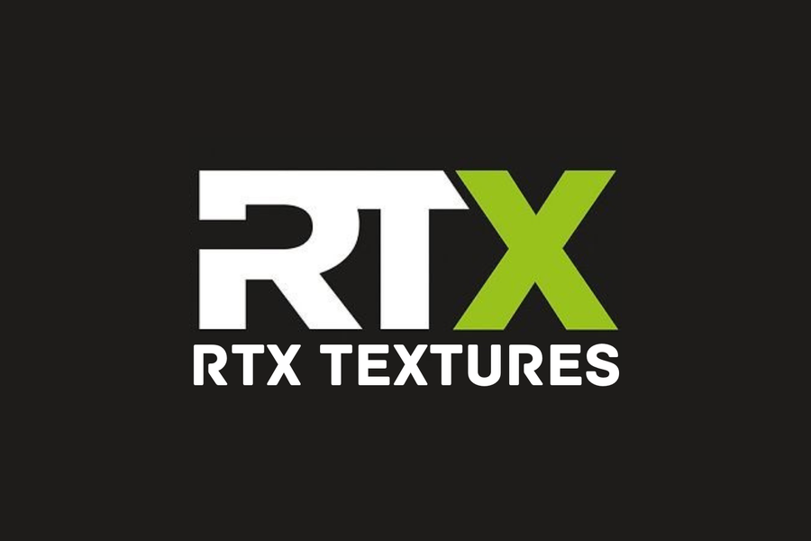

PAGE 01 // FLOPPERSBLOP
Home
Ideas that flop, get fixed, and sometimes ship.
Minecraft modpacks, texture packs, software experiments and the notes behind them. Built by one person, in public.
Projects
OptiBoostCraft
A performance-focused Minecraft modpack of 30 community mods, still maintained.
Open →
Resource packRTX Textures
A 2021 compilation resource pack from other creators’ textures. Archived, not offered here.
Open →YouTubeGrowing Channel
My YouTube channel for Minecraft, gaming and PC optimisation. New videos after Diwali.
Open →Explore the site
What this is
FloppersBlop is where I keep the things I build. Most of it is Minecraft: a performance modpack, a realistic texture pack and a YouTube channel about both. Alongside that sit smaller software and web experiments that never had a proper home.
Some of this work is released and used by other people. Some of it is a prototype, and some is old. Every project gets a page that says which is which, what it needs and what it can’t do.
What I’m working on
OptiBoostCraft is a Minecraft modpack built around performance. I pick compatible optimisation mods, test how they behave together and keep the pack updated. It is published on Modrinth, where it shows about 6,400 downloads as of 26 October 2026. https://modrinth.com/modpack/optiboostcraft
RTX Textures was a resource pack I put together in 2021 from other creators’ texture packs. I didn’t make the textures. It is no longer in production and I don’t offer it from this site.
Growing Channel is my YouTube channel for Minecraft, gaming, PC optimisation and tutorials. It went quiet while I studied for exams, and a few videos are lined up for after the Diwali festive season. https://www.youtube.com/@GrowingChannel
Counts are as of the date shown beside each one. The channel figure is from its last update.
Why it exists
Most ideas don’t survive first contact. Some get rebuilt and a few turn out useful. I wanted one place that shows the whole process, not just the winners.
Say hello
Found a bug, want to ask permission to reuse something, or have an idea to talk through? Email 29aryash@gmail.com. I read everything, though I can’t promise a reply to every message.
LinkedIn: https://www.linkedin.com/in/yash29xd/ · Instagram: https://www.instagram.com/floppersblop/ · GitHub: https://github.com/Yash29xd · YouTube: https://www.youtube.com/@GrowingChannel · Discord: https://discord.gg/QXB922G5W5